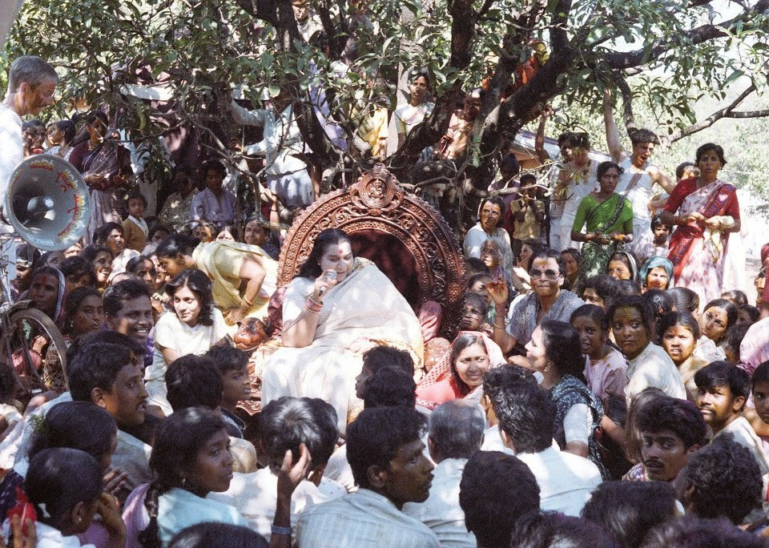

Kundalini Awakening...

Sahaja Yoga is a method of meditation which brings a breakthrough in the evolution of human awareness. It was created by Shri Mataji Nirmala Devi in 1970 and has since spread all around the world.
In Shri Mataji's own words: "Global unity of mankind can be achieved through this awakening that can occur within each human being, so that transformation takes place within us. By this process a person becomes moral, united, integrated and balanced. One actually gets the experience of the feeling of the all-pervading divine power as cool breeze. "Know thyself" is the main theme of all the scriptures - it becomes evident and one reaches the absolute understanding of oneself.
Thus one becomes peaceful and joyous in life. One becomes collective as a drop falling into the ocean of compassion. This method works for the multitudes and not individually. Of course one cannot pay for the experience of Divine Love. Moreover, it is the last breakthrough of our evolution. This is the actualization of such transformation, which is taking place now, worldwide, and has been proved and experienced by hundreds of thousands in over 85 countries."
Thus one becomes peaceful and joyous in life. One becomes collective as a drop falling into the ocean of compassion. This method works for the multitudes and not individually. Of course one cannot pay for the experience of Divine Love. Moreover, it is the last breakthrough of our evolution. This is the actualization of such transformation, which is taking place now, worldwide, and has been proved and experienced by hundreds of thousands in over 140 countries."
Sahaja Yoga meditation is a subtle happening where the state of meditation can be achieved by on praying.
Here the main thing is you need to achieve the state of thoughtlessness.
The next step in our collective evolution...

This inner awakening is called by many names: Self Realization, Second Birth, Enlightenment, Liberation, Moksha, Satori and it is the goal of all religions and spiritual traditions of the world. This knowledge is ancient, but for a long time it was available only to a few souls, being kept secret and transmitted from guru to disciple, since Self Realization was extremely difficult to achieve. In these modern times, through Sahaja ("spontaneous") Yoga ("union with one's Self"), this experience has become effortless and available to everyone, for the first time in the history of human spirituality.
The advent of Sahaja Yoga was prophesized a long time ago in many of the world's spiritual traditions and religions (see the section on Prophecies and Fulfillments). At the same time, in these modern times many seekers of Truth have been deluded into following various false, self-proclaimed "gurus" who are either money or power oriented, but not Spirit oriented (here is a guide on how to recognize them).
Through the practice of Sahaja Yoga, our awareness gains a new dimension where absolute truth can be felt tangibly - on our central nervous system. As a result of this happening, our spiritual ascent takes place effortlessly and physical, mental and emotional balance are achieved as a byproduct of this growth of our awareness.
We then realize that we are not this body, mind, ego, conditionings, emotions or intellect, but something of an eternal nature which is always residing in our heart in a pure, undisturbed state - the Self or Spirit. The Spirit is the source of true knowledge, peace and joy. Self Realization is the actualization of this connection with our Spirit, which as Shri Mataji advocates, is the birthright of every human being.